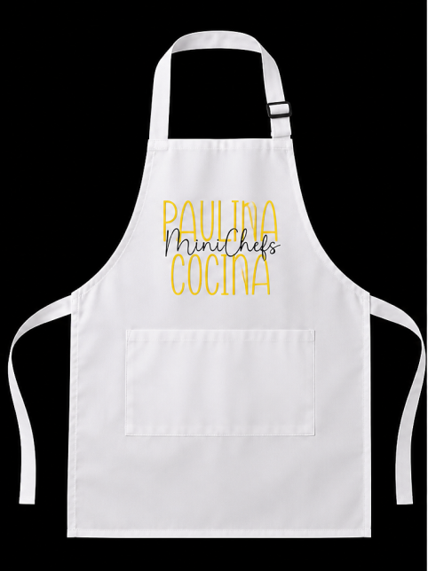
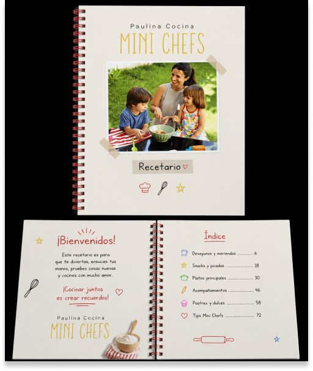
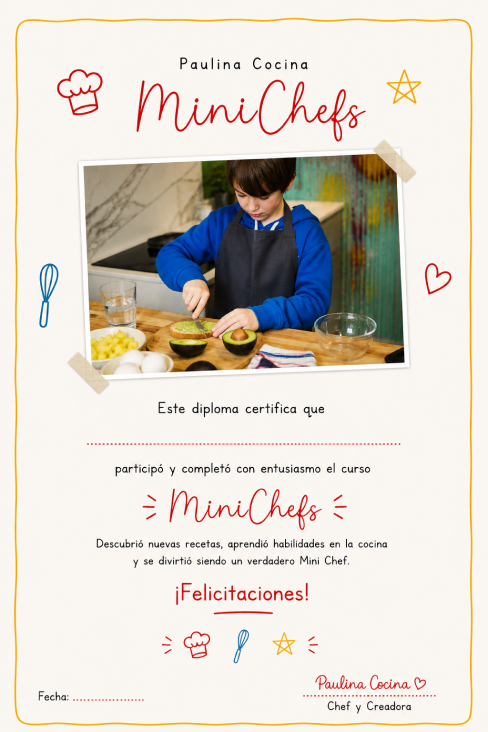
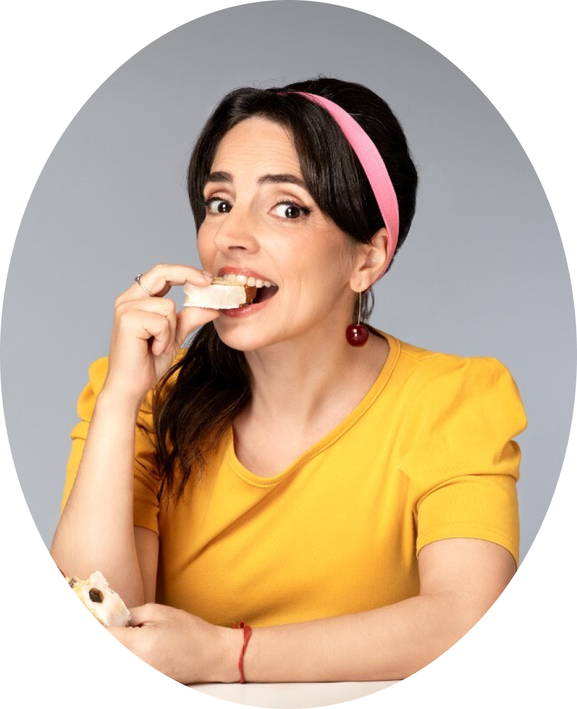

Tu hijo va a cocinar con Paulina
Una experiencia presencial unica donde los chicos aprenden a cocinar de verdad, se divierten y crean recuerdos.
Qué es Mini Chefs con Paulina
Mini Chefs es una jornada presencial de cocina para chicos y chicas. Un evento donde los mas chiquitos se ponen el delantal, se lavan las manos y entran al maravilloso mundo de la cocina junto a Paulina.
- Actividad presencial en un espacio pensado y preparado para chicos
- Recetas reales que los chicos preparan de principio a fin
- Un adulto acompañante por cada niño/a participante
- Supervisado por Paulina y su equipo en todo momento
Actividades del evento
Recetas paso a paso
Preparan dos recetas completas con ingredientes reales: una salada y una dulce. Todo guiado y explicado para sus edades.
Técnicas básicas de cocina
Aprenden a medir, mezclar, amasar y mas. Conceptos fundamentales que van a recordar siempre.
Degustacion de lo cocinado
Se sientan a comer lo que prepararon. La satisfacción de comer algo hecho por ellos mismos.
Juegos y dinámicas
Actividades lúdicas entre cocina y cocina para mantener la energía y la diversión.
Regalos y sorpresas
Cada participante se lleva su delantal de Mini Chef, un recetario impreso y sorpresas exclusivas.
Momento familiar
Un espacio al final del evento para compartir con los adultos acompañantes y disfrutar juntos.
Mucho mas que una clase de cocina
Enseñar a los chicos a cocinar es fomentar su creatividad y autonomía. Es una forma de conectar con su alimentación y de aplicar habilidades de la vida real.
Autonomia y confianza
Los chicos que cocinan ganan independencia. Aprenden a prepararse su merienda solos y se sienten capaces.
Ciencia en la cocina
Qué hace el bicarbonato en una torta, por qué sube la masa, cómo se derrite el chocolate. Ciencia pura y divertida.
Matemática aplicada
Medir, dividir, multiplicar. Cada receta es un ejercicio de matematica practica sin que se den cuenta.
Estas viendo 3 de 6
Los cupos son limitados
Reserva el lugar de tu Mini Chef antes de que se agoten.
Cada Mini Chef se lleva a casa

Delantal de Mini Chef
Un delantal exclusivo del evento para seguir cocinando en casa.

Recetario impreso
Las recetas del evento en un cuadernillo ilustrado para repetirlas.

Diploma de Mini Chef
Un certificado para enmarcar y recordar la experiencia.
Sociologa, cocinera, y la voz que cambio como Argentina cocina
Paulina es socióloga de profesión, cocinera amateur y el humor atraviesa todo lo que hace. Es la referencia de quienes buscan recetas sencillas, para comer rico, práctico y casero día a día.
Los chicos que se acercan a la cocina aprenden a comer mejor, encuentran un espacio creativo y participan activamente de un area central de sus vidas.

Todo lo que necesitas saber
Si tu pregunta no esta aqui, escribinos por WhatsApp y te respondemos en minutos.
Reserva el lugar de tu Mini Chef
Los cupos son limitados para garantizar una experiencia personalizada. Dejanos tus datos y te contactamos con toda la información.
- Cupos limitados — inscripcion garantizada
- Respuesta inmediata via email
- Cancelacion gratuita hasta 7 dias antes
Completa tus datos
Al inscribirte, aceptas recibir información sobre el evento. Podés darte de baja cuando quieras.